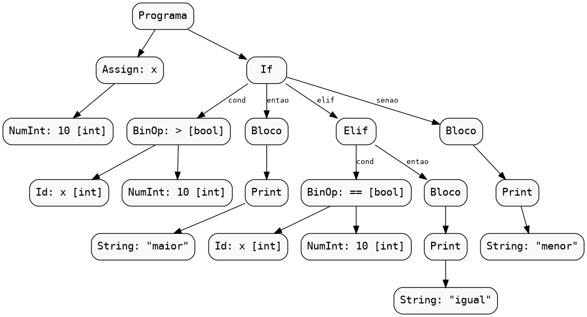
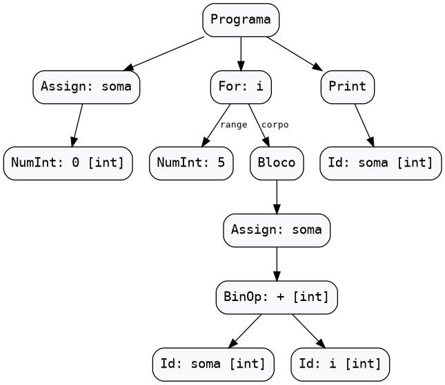
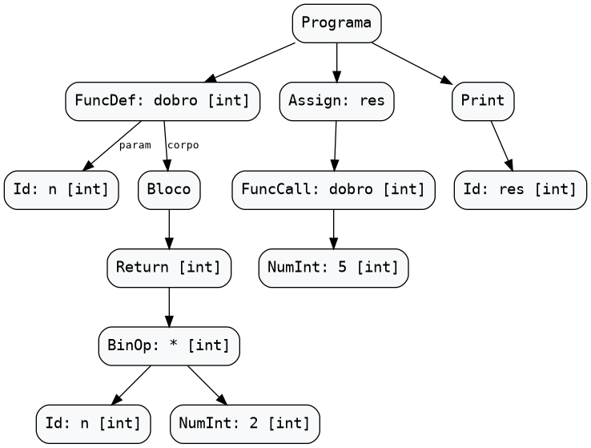

Árvore Sintática Abstrata (AST)
A Árvore Sintática Abstrata é a representação intermediária produzida pelo parser após validar a sintaxe do código-fonte. Diferentemente da árvore de derivação concreta (parse tree), a AST omite detalhes sintáticos (parênteses, dois-pontos, tokens NEWLINE/INDENT/DEDENT) e retém apenas a estrutura semântica do programa.
Motivação
A AST serve como contrato estrutural entre o front-end (Lexer e Parser) e as etapas posteriores do compilador (Análise Semântica, Geração de Código Intermediário TAC e Geração de Código C#). Construída automaticamente durante as reduções do Bison em parser/parser.y, ela armazena a hierarquia de comandos e expressões, a linha de origem de cada construção (linha) e o tipo inferido pela análise semântica (tipo_resolvido).
Módulo ast.h / ast.c
Os arquivos ficam em src/ast.h e src/ast.c, seguindo o padrão de modularização e gerenciamento de memória (ownership) do projeto.
Tipos de Nós (TipoNo) e Matriz Completa de Campos
Cada nó da AST tem um tipo definido pelo enum TipoNo que identifica a construção sintática que ele representa. A struct NoAST (src/ast.h) adota uma estrutura genérica compartilhada para todos os nós da árvore. A tabela a seguir documenta a matriz bidimensional completa TipoNo × campo, conferida com as implementações dos construtores em src/ast.c e utilizada nas fases de Análise Semântica e Geração de Código:
Tipo de Nó (TipoNo) |
nome |
valor_* |
operador |
esquerda |
direita |
condicao |
bloco_if |
bloco_else |
argumentos / num_argumentos |
tipo_resolvido |
linha |
|---|---|---|---|---|---|---|---|---|---|---|---|
NO_NUM_INT |
— | valor_int |
— | — | — | — | — | — | — | TIPO_INT |
Linha literal |
NO_NUM_FLOAT |
— | valor_float |
— | — | — | — | — | — | — | TIPO_FLOAT |
Linha literal |
NO_STRING |
— | valor_string |
— | — | — | — | — | — | — | TIPO_STRING |
Linha literal |
NO_BOOL |
— | valor_int (1/0) |
— | — | — | — | — | — | — | TIPO_BOOL |
Linha literal |
NO_ID |
nome |
— | — | — | — | — | — | — | — | Tipo do símbolo | Linha identificador |
NO_BINOP |
— | — | operador |
Filho esquerdo | Filho direito | — | — | — | — | Tipo da operação | Linha operação |
NO_UNARYOP |
— | — | operador |
Operando único | — | — | — | — | — | Tipo da operação | Linha operador |
NO_ASSIGN |
nome (alvo) |
— | — | Expr atribuída | — | — | — | — | — | — | Linha atribuição |
NO_PRINT |
— | — | — | — | — | — | — | — | Lista de expressões | — | Linha do print |
NO_INPUT |
— | — | — | Prompt (opc.) | — | — | — | — | — | TIPO_STRING |
Linha do input |
NO_IF |
— | — | — | — | — | Condição if | Bloco then | Bloco else | Lista nós NO_ELIF |
— | Linha do if |
NO_ELIF |
— | — | — | — | — | Condição elif | Bloco do elif | — | — | — | Linha do elif |
NO_WHILE |
— | — | — | — | — | Condição while | Corpo do laço | — | — | — | Linha do while |
NO_FOR |
nome (var) |
— | — | Args do range | — | — | Corpo do laço | — | — | — | Linha do for |
NO_FUNCDEF |
nome (func) |
— | — | — | — | — | Corpo da função | — | Lista parâmetros (NO_ID) |
Tipo retorno | Linha do def |
NO_RETURN |
— | — | — | Expr retorno | — | — | — | — | — | Tipo retorno | Linha do return |
NO_FUNCCALL |
nome (func) |
— | — | — | — | — | — | — | Lista argumentos | Tipo retorno | Linha chamada |
NO_BLOCO |
— | — | — | — | — | — | — | — | Lista de comandos | — | — |
NO_PROGRAMA |
— | — | — | — | — | — | — | — | Comandos top-level | — | — |
Catálogo Estrutural dos 19 Tipos de Nó
Abaixo, cada nó da AST é ilustrado com um trecho de código Python de exemplo e a respectiva estrutura gerada em memória:
1. Literais e Identificadores
NO_NUM_INT
- Exemplo:
42 - Campos:
tipo = NO_NUM_INT,valor_int = 42,tipo_resolvido = TIPO_INT. - Estrutura:
[NO_NUM_INT: 42]
NO_NUM_FLOAT
- Exemplo:
3.14 - Campos:
tipo = NO_NUM_FLOAT,valor_float = 3.14,tipo_resolvido = TIPO_FLOAT. - Estrutura:
[NO_NUM_FLOAT: 3.14]
NO_STRING
- Exemplo:
"ola mundo" - Campos:
tipo = NO_STRING,valor_string = "ola mundo",tipo_resolvido = TIPO_STRING. - Estrutura:
[NO_STRING: "ola mundo"]
NO_BOOL
- Exemplo:
True - Campos:
tipo = NO_BOOL,valor_int = 1,tipo_resolvido = TIPO_BOOL. - Estrutura:
[NO_BOOL: True]
NO_ID
- Exemplo:
x - Campos:
tipo = NO_ID,nome = "x",tipo_resolvido = (definido na semântica). - Estrutura:
[NO_ID: x]
2. Operações e Expressões
NO_BINOP
- Exemplo:
a + 10 - Construtor:
criar_no_binop(OP_SOMA, no_a, no_10, linha)
graph TD
B["NO_BINOP (+)"] --> E["esquerda: NO_ID (a)"]
B --> D["direita: NO_NUM_INT (10)"]
NO_UNARYOP
- Exemplo:
-xounot flag - Construtor:
criar_no_unaryop(OP_NEG, no_x, linha)
graph TD
U["NO_UNARYOP (-)"] --> E["esquerda: NO_ID (x)"]
NO_INPUT
- Exemplo:
input("Digite seu nome: ") - Construtor:
criar_no_input(no_prompt, linha)
graph TD
IN["NO_INPUT"] --> P["esquerda: NO_STRING ('Digite seu nome: ')"]
3. Atribuição e Comandos Básicos
NO_ASSIGN
- Exemplo:
x = y + 1 - Construtor:
criar_no_assign("x", no_expr, linha)
graph TD
A["NO_ASSIGN (nome = 'x')"] --> E["esquerda: NO_BINOP (+)"]
NO_PRINT
- Exemplo:
print(a, b) - Construtor:
criar_no_print(args, 2, linha)
graph TD
P["NO_PRINT (num_argumentos = 2)"] --> A0["argumentos[0]: NO_ID (a)"]
P --> A1["argumentos[1]: NO_ID (b)"]
4. Estruturas de Controle de Fluxo
NO_IF e NO_ELIF
- Exemplo:
python if x > 0: print(1) elif x < 0: print(-1) else: print(0) - Construtor:
criar_no_if(cond, bloco_if, elifs, 1, bloco_else, linha)
graph TD
IF["NO_IF"] --> C["condicao: NO_BINOP (>)"]
IF --> BIF["bloco_if: NO_BLOCO (then)"]
IF --> EL["argumentos[0]: NO_ELIF"]
IF --> BEL["bloco_else: NO_BLOCO (else)"]
EL --> CEL["condicao: NO_BINOP (<)"]
EL --> BELIF["bloco_if: NO_BLOCO (elif body)"]
NO_WHILE
- Exemplo:
python while count > 0: count = count - 1 - Construtor:
criar_no_while(cond, bloco, linha)
graph TD
W["NO_WHILE"] --> C["condicao: NO_BINOP (>)"]
W --> B["bloco_if: NO_BLOCO (corpo do laço)"]
NO_FOR
- Exemplo:
python for i in range(10): print(i) - Construtor:
criar_no_for("i", no_range, bloco, linha)
graph TD
F["NO_FOR (nome = 'i')"] --> R["esquerda: NO_BLOCO (range args)"]
F --> B["bloco_if: NO_BLOCO (corpo do laço)"]
5. Funções e Agrupamentos
NO_FUNCDEF
- Exemplo:
python def soma(a, b): return a + b - Construtor:
criar_no_funcdef("soma", params, 2, bloco, linha)
graph TD
FD["NO_FUNCDEF (nome = 'soma')"] --> P0["argumentos[0]: NO_ID (a)"]
FD --> P1["argumentos[1]: NO_ID (b)"]
FD --> C["bloco_if: NO_BLOCO (corpo da função)"]
NO_RETURN
- Exemplo:
return x * 2 - Construtor:
criar_no_return(expr, linha)
graph TD
R["NO_RETURN"] --> E["esquerda: NO_BINOP (*)"]
NO_FUNCCALL
- Exemplo:
soma(3, 4) - Construtor:
criar_no_funccall("soma", args, 2, linha)
graph TD
FC["NO_FUNCCALL (nome = 'soma')"] --> A0["argumentos[0]: NO_NUM_INT (3)"]
FC --> A1["argumentos[1]: NO_NUM_INT (4)"]
NO_BLOCO e NO_PROGRAMA
- Exemplo: O programa raiz reúne os comandos top-level em
argumentos, e blocos indentados agrupam comandos subordinados.
graph TD
PR["NO_PROGRAMA (num_argumentos = N)"] --> C0["argumentos[0]"]
PR --> C1["argumentos[1]"]
PR --> CN["argumentos[N-1]"]
Macros de Acesso Semântico e Proposta de Refatoração (Issue #42)
1. Macros Semânticas de Conveniência
Para tornar as fases de Análise Semântica e Geração de Código mais legíveis e evitar erros conceituais ao navegar pelos campos reaproveitados da struct NoAST, propõem-se as seguintes macros de acesso padronizadas:
/* ── Funções ─────────────────────────────────────────────────────── */
#define CORPO_FUNCAO(n) ((n)->bloco_if)
#define PARAMS_FUNCAO(n) ((n)->argumentos)
#define NUM_PARAMS_FUNCAO(n) ((n)->num_argumentos)
/* ── Atribuição e Variáveis ──────────────────────────────────────── */
#define VAR_ASSIGN(n) ((n)->nome)
#define EXPR_ASSIGN(n) ((n)->esquerda)
/* ── Laços de Repetição ──────────────────────────────────────────── */
#define VAR_FOR(n) ((n)->nome)
#define RANGE_FOR(n) ((n)->esquerda)
#define CORPO_FOR(n) ((n)->bloco_if)
#define COND_WHILE(n) ((n)->condicao)
#define CORPO_WHILE(n) ((n)->bloco_if)
/* ── Condicionais (if / elif / else) ─────────────────────────────── */
#define COND_IF(n) ((n)->condicao)
#define BLOCO_THEN(n) ((n)->bloco_if)
#define BLOCO_ELSE(n) ((n)->bloco_else)
#define ELIFS_IF(n) ((n)->argumentos)
#define NUM_ELIFS_IF(n) ((n)->num_argumentos)
/* ── Chamadas, Retorno e Entrada ─────────────────────────────────── */
#define EXPR_RETURN(n) ((n)->esquerda)
#define PROMPT_INPUT(n) ((n)->esquerda)
#define ARGS_FUNCCALL(n) ((n)->argumentos)
#define NUM_ARGS_CALL(n) ((n)->num_argumentos)
2. Avaliação Arquitetural: Macros vs. union
| Aspecto | Abordagem com Macros (Proposta) | Abordagem com tagged union |
|---|---|---|
| Compatibilidade | 100% retrocompatível com código e testes existentes. | Quebra todos os arquivos que acessam campos diretamente (.esquerda, etc.). |
| Consumo de Memória | Struct plana (64 bytes por nó). | Economia potencial de 20–30 bytes por nó. |
| Clareza de Código | Nomes semânticos claros (CORPO_FUNCAO(n)). |
Nomes aninhados explícitos (n->dado.funcdef.corpo). |
| Impacto no Projeto | Risco zero de regressão em branches ativas. | Alto esforço de refatoração em parser.y, ast.c, semantica.c, codegen. |
Conclusão e Decisão: Mantém-se a estrutura NoAST existente em src/ast.h intacta sem alterações estruturais no código-fonte, documentando a matriz 2D completa e apresentando as macros acima como proposta de abstração semântica para discussão com o grupo.
Estrutura do Nó (NoAST)
Todos os nós compartilham uma única struct NoAST com campos que são usados conforme o TipoNo:
typedef struct noAST {
TipoNo tipo;
/* Literais e identificadores */
int valor_int;
double valor_float;
char *valor_string;
char *nome;
/* Operador para BinOp e UnaryOp (ex: '+', '-', OP_AND, OP_NOT, etc.) */
int operador;
/* Tipo resolvido pela análise semântica (usado na checagem e geração de código) */
TipoDado tipo_resolvido;
/* Filhos principais (condição, expressão) */
struct noAST *condicao;
struct noAST *esquerda;
struct noAST *direita;
/* Blocos de código */
struct noAST *bloco_if;
struct noAST *bloco_else;
/* Lista encadeada/dinâmica (elif, argumentos, parâmetros, comandos) */
struct noAST **argumentos;
int num_argumentos;
/* Informação de localização para mensagens de erro */
int linha;
} NoAST;
Operadores (TipoOperador)
Operadores binários e unários são representados por um enum separado para evitar ambiguidade com os tokens do Bison:
| Valor | Operação |
|---|---|
OP_SOMA |
+ |
OP_SUB |
- |
OP_MULT |
* |
OP_DIV |
/ |
OP_EQ |
== |
OP_NEQ |
!= |
OP_GT |
> |
OP_LT |
< |
OP_GTE |
>= |
OP_LTE |
<= |
OP_AND |
and |
OP_OR |
or |
OP_NOT |
not |
OP_NEG |
- (unário) |
OP_IN |
in |
Funções da API
Construtores
Cada tipo de nó possui uma função construtora que aloca o nó, inicializa seus campos e retorna o ponteiro:
| Função | Descrição |
|---|---|
criar_no_int(int valor, int linha) |
Cria nó NO_NUM_INT |
criar_no_float(double valor, int linha) |
Cria nó NO_NUM_FLOAT |
criar_no_string(char *valor, int linha) |
Cria nó NO_STRING |
criar_no_bool(int valor, int linha) |
Cria nó NO_BOOL |
criar_no_id(char *nome, int linha) |
Cria nó NO_ID |
criar_no_binop(int op, NoAST *esq, NoAST *dir, int linha) |
Cria nó NO_BINOP |
criar_no_unaryop(int op, NoAST *operando, int linha) |
Cria nó NO_UNARYOP |
criar_no_assign(char *nome, NoAST *expr, int linha) |
Cria nó NO_ASSIGN |
criar_no_print(NoAST **args, int num_args, int linha) |
Cria nó NO_PRINT |
criar_no_input(NoAST *prompt, int linha) |
Cria nó NO_INPUT |
criar_no_if(NoAST *cond, NoAST *bloco, NoAST **elifs, int n_elifs, NoAST *else_bloco, int linha) |
Cria nó NO_IF |
criar_no_elif(NoAST *cond, NoAST *bloco, int linha) |
Cria nó NO_ELIF |
criar_no_while(NoAST *cond, NoAST *bloco, int linha) |
Cria nó NO_WHILE |
criar_no_for(char *var, NoAST *range, NoAST *bloco, int linha) |
Cria nó NO_FOR |
criar_no_funcdef(char *nome, NoAST **params, int n_params, NoAST *bloco, int linha) |
Cria nó NO_FUNCDEF |
criar_no_return(NoAST *expr, int linha) |
Cria nó NO_RETURN |
criar_no_funccall(char *nome, NoAST **args, int n_args, int linha) |
Cria nó NO_FUNCCALL |
criar_no_bloco(NoAST **cmds, int n_cmds) |
Cria nó NO_BLOCO |
criar_no_programa(NoAST **cmds, int n_cmds) |
Cria nó NO_PROGRAMA |
Utilitários
| Função | Descrição |
|---|---|
imprimir_ast(NoAST *raiz, int nivel) |
Imprime a árvore formatada com indentação para debug |
ast_para_dot(NoAST *raiz, FILE *saida) |
Exporta a árvore no formato Graphviz DOT |
liberar_ast(NoAST *raiz) |
Libera toda a memória da árvore recursivamente |
Exemplo e Representação Visual
Para o código de exemplo:
x = 10 + 5
print(x)
A saída textual de imprimir_ast (após a anotação de tipo_resolvido pela Análise Semântica) é:
Programa
Assign: x
BinOp: + [int]
NumInt: 10 [int]
NumInt: 5 [int]
Print
Id: x [int]
E a estrutura em árvore correspondente gerada na memória é:
graph TD
Prog["NO_PROGRAMA"]
Assign["NO_ASSIGN (x)"]
BinOp["NO_BINOP (+)"]
N10["NO_NUM_INT (10)"]
N5["NO_NUM_INT (5)"]
Print["NO_PRINT"]
IdX["NO_ID (x)"]
Prog --> Assign
Prog --> Print
Assign --> BinOp
BinOp --> N10
BinOp --> N5
Print --> IdX
Integração com o Parser
A integração da AST com o analisador sintático (parser/parser.y) foi concluída utilizando ações semânticas do Bison para construir a árvore de baixo para cima (bottom-up) durante a análise gramatical. O processo envolveu as seguintes modificações estruturais:
1. Configuração Global e Tipagem
- Cabeçalhos: Adição de
#include "src/ast.h"no prólogo do parser e declaração da variável globalNoAST *raiz_ast;para armazenar a raiz da árvore completa. - Expansão do
%union: Inclusão do ponteirostruct noAST *astno%uniondo Bison para permitir a navegação de nós entre as regras. - Tipagem Dinâmica: Declaração de
%type <ast>para todos os não-terminais que representam comandos, expressões ou blocos. O token de identificador foi ajustado para%token <sval> IDpara transportar o nome das variáveis e funções.
2. Ações Semânticas e Construtores
- Em cada regra gramatical, foram adicionadas ações no formato
{ $$ = criar_no_*(...); }utilizando a API de construtores. - A rastreabilidade das linhas dos nós é realizada utilizando o mecanismo de locations do Bison (
%locations), repassando@N.first_lineno parâmetro de linha de cada construtorcriar_no_*. O lexer alimentayyllocatravés da macroYY_USER_ACTION, garantindo que a linha exata de cada token e estrutura composta seja preservada com precisão.
3. Gerenciamento de Listas Dinâmicas
Como a análise do Bison é reduzida de baixo para cima, o tamanho final de blocos de código ou listas de argumentos não é conhecido previamente.
* Foram implementadas as funções auxiliares criar_lista() e adicionar_lista() no prólogo do parser.y.
* Essas funções utilizam nós genéricos do tipo NO_BLOCO temporariamente para acumular o vetor **argumentos dinamicamente via malloc/realloc, repassando-os em seguida para construtores estruturados como criar_no_if, criar_no_print e criar_no_funcdef.
4. Integração com o Analisador Léxico
Para garantir que a árvore receba dados válidos sem gerar falhas de segmentação (Segmentation Fault), o analisador léxico (lexer/lexer.l) foi atualizado. A regra para identificadores (ID) agora realiza a alocação de memória do texto usando yylval.sval = strdup(yytext);.
5. Saída, Validação e Flags --ast e --dot
A função main() do compilador repassa a raiz para a Análise Semântica via analisar_semantica(raiz_ast, tabela) (que preenche o tipo_resolvido de cada expressão) e, caso a flag --ast seja informada na linha de comando, invoca imprimir_ast(raiz_ast, 0) exibindo os nós da árvore e seus respectivos tipos resolvidos:
./compilador --ast < testes/Testes1.py
Para exportar a AST no formato Graphviz DOT e gerar uma imagem visual (além de salvar e abrir automaticamente ast.png ao usar a flag --dot), utilize:
./compilador --dot < x.py > x.dot && dot -Tpng x.dot -o x.png
Visualização com Graphviz (--dot)
Abaixo estão 3 exemplos gerados pelo compilador usando --dot e renderizados com Graphviz (dot -Tpng):
1. Condicional (if / elif / else)
x = 10
if x > 10:
print("maior")
elif x == 10:
print("igual")
else:
print("menor")

2. Laço de Repetição (for com range)
soma = 0
for i in range(5):
soma = soma + i
print(soma)

3. Definição e Chamada de Função (def + chamada)
def dobro(n):
return n * 2
res = dobro(5)
print(res)

Testes Unitários (TDD)
O módulo AST conta com testes unitários em testes/tdd/teste_ast.c, cobrindo a alocação e verificação de todos os nós, listas encadeadas/dinâmicas e desalocação recursiva de memória.
Para compilar e executar os testes unitários da AST:
make test_ast
Referências
- Implementação:
src/ast.hesrc/ast.c - Suíte de Testes:
testes/tdd/teste_ast.c - Exemplo da disciplina:
Aulas/semana 06/src/ast.heast.c - Issues relacionadas: #7 (AST) e #19 (Documentação AST e Tabela de Símbolos)